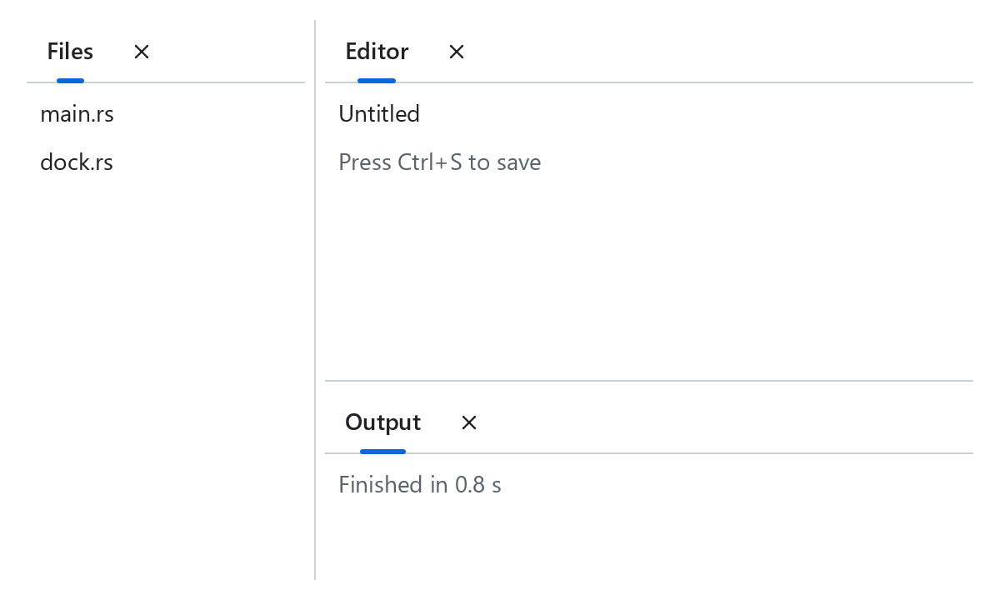
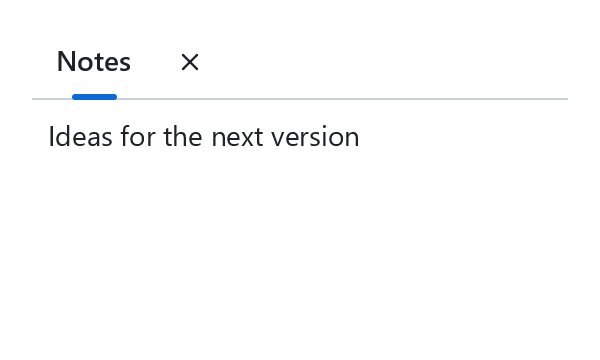
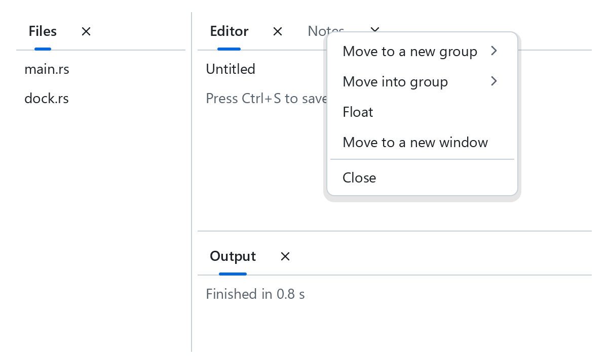

kargui 開発レポート ・ 第 14 章
別の窓
ドッキングの 3 段目として、パネルを OS の別の窓に出せるようにしました。画面が 2 つある時に、片方の画面へパネルを置く時などに使います。Windows と X11 だけで、Wayland では今までどおり窓の中の枠にします。この章では、範囲を決めた理由と、別の窓の中身をアプリが描く書き方、窓の場所を OS ごとに読み直す作りを紹介します。後半では、本物の窓での確かめと、作者の手の確かめの結果を書きます。
この章で分かること
- Wayland では別の窓に出さないと決めた理由
- 別の窓の中身を、アプリの
App::windowから同じui.dockで描く書き方 - 窓の場所の形が OS ごとに違う時に、開き直してもずれないように読み戻す方法
- 最小化した窓の場所を覚えてはいけない理由
- 窓を並べて置くウィンドウマネージャー（Hyprland）では、頼んだ場所が使われないこと
範囲を決めた
2 段目を送った後、作者に 3 段目の範囲を 1 つ尋ねました。Wayland でも別の窓に出すかどうかです。Wayland では、アプリが窓の場所を決めることも読むこともできません。窓を出す場所も、保存した場所を戻せるかも、合成（コンポジター）に任せることになります。
| 案 | 3 つの OS の動き | 場所を戻せるか | 作る量 |
|---|---|---|---|
| Wayland では出さない（推奨） | Windows と X11 は別の窓、Wayland は窓の中の枠。違いは説明に書く | 別の窓に出す OS では戻せる | 少ない |
| Wayland でも出す | 3 つとも別の窓に出せる | Wayland では戻せない。出す場所も合成が決める | 多い（Wayland だけの扱いが要る） |
作者の答えは「その形で進めて」でした。Wayland では「Move to a new window」のメニューを出しません。読み込んだ並べ方に別の窓があれば、窓の中の浮いた枠にします。


書き方
利用者は、タブの右クリックのメニューの「Move to a new window」で、パネルを別の窓に出します。窓は、そのまとまりがあった所に同じ大きさで開き、題は選んでいるパネルの名前です。アプリから出す時は DockTo::Window { x, y, w, h } を使います。

kargui の複数の窓は、主の窓のビューで ui.window を頼み、その窓の中身はアプリの App::window が描く作りです（第 10 章）。ドッキングも同じ道を通ります。主の窓の ui.dock が、別の窓に出したまとまりごとに窓を頼みます。アプリは App::window の中で、dock.has_window(key) が true なら、主の窓と同じ ui.dock を呼びます。
impl App for Ide {
fn view(&mut self, ui: &mut Ui) {
self.panels(ui); // ui.dock(&mut self.dock).show(…)
}
// 別の窓に出したまとまりも、同じ dock で描く
fn window(&mut self, key: &str, ui: &mut Ui) {
if self.dock.has_window(key) {
self.panels(ui);
}
}
}ui.dock が窓を頼み、別の窓では同じ ui.dock がそのまとまりだけを描く。アプリは 1 つなので、どちらの窓での変更も同じ Dock に入る。別の窓のタブのメニューは、「Dock」（元の場所へ）・「Move into group」・「Close」です。利用者が窓を × で閉じた時は、中のパネルを消さずに、それぞれ窓に入る前にいた所へ戻します。並べ方の保存には「window x y w h」の行で、窓の場所と中の大きさが入ります。
浮いた枠と同じ並びに持つ
別の窓に出したまとまりは、浮いたまとまり（第 13 章）に「別の窓か」の印を足して、同じ並びに持ちました。外す・入れる・元の場所へ戻す・選ぶ・保存は、浮いた枠の物をそのまま使えます。違いは描く側だけです。
- 主の窓は、並べ方の木と全体の中の浮いた枠だけを描く。F6 も、この 2 つだけを回る。
- 別の窓の中は、その窓のまとまりだけを窓いっぱいに描く。
- 別の窓の中のまとまりは、落とす先の計算では浮いたまとまりとして扱う。窓いっぱいの形は木のまとまりと同じに見えるので、そのままでは「分ける」の薄い塗りが出るのに分けられない。第 13 章の 2 回目に直した食い違いと同じ形なので、作る時に避けた。
窓の場所を読み直す
並べ方を保存した後で開き直した時、窓が同じ場所に出るようにするには、窓の場所を OS から読み直す必要があります。ここで、OS ごとに場所の形が違うことが分かりました。
| OS | 場所の形（Options::position と同じ） | 読み直す時 |
|---|---|---|
| Windows | 画面の画素のまま。窓の外枠の左上 | 窓が動いた時と、動かし終えた時（WM_MOVE・WM_EXITSIZEMOVE）。最小化している間は読まない |
| X11 | 論理の画素。窓の中の左上（外枠も同じ所とする） | 窓の形が変わった知らせ（ConfigureNotify）のたびに、中の左上を画面の座標で読む |
| Wayland | 読めない | 別の窓に出さない |
開き直した時にずれないよう、どの OS でも「窓を開く時に渡す形」のまま読み戻して保存します。Windows の Options::position は、説明では論理の画素と書いてありますが、実際は画面の画素のまま使っていました。100 % の画面では同じ値になるので、今まで気づきませんでした。今回は、各 OS が受け取る形にそろえる方を選び、説明に合わせて直すことはしませんでした。画面ごとに倍率が違う時、論理の画素ではどの画面の倍率で直すかが決まらないためです。
Windows は、最小化した窓を画面の外（左上が -32000, -32000）に置きます。その間の場所を保存すると、次に開いた時に窓が画面の外に出て見えなくなります。窓の場所を覚える時は、最小化している間（IsIconic）を除き、大きさが 0 の間も覚えないでください。
別の窓は、Windows では動かし終えた時に 1 回描き直し、新しい場所を並べ方に入れます。動かしている途中は描かないので、記録も増えません。X11 には「動かし終えた」の知らせが無いので、場所が変わるたびに描き直します。
本物の窓で確かめた
試験台では、OS の窓の場所は試験が決めた値です。そこで作者に渡す前に、最初から別の窓を 1 つ持つ並べ方で始める小さなアプリを作り、本物の窓で確かめました。
| 確かめたこと | Windows | X11（検証機の Hyprland） |
|---|---|---|
| 頼んだ場所に開くか | (-1400, 620) に、中の大きさ 320×180 で開いた（2 つ目の画面） | Hyprland が窓を並べて置いた。頼んだ場所は使われず、Hyprland が決めた場所と大きさ（646, 40、624×670）が並べ方に入った |
| 動かした場所が入るか | (-1300, 660) へ動かすと、保存する場所も (-1300, 660) になった | （動かす命令は使わなかった） |
| 閉じると戻るか | Notes が Editor の隣のタブへ戻り、窓が閉じた | Hyprland の命令で閉じると、同じく戻った |
検証機では、別のことも起きました。作業場 9 に切り替えてから確かめのアプリを開き、窓を押すと、Hyprland 自体が 2 回落ちました（見張りの仕組みで、自動で起動し直しました）。切り替えずに試した 3 回は落ちていません。Hyprland の記録に理由は残っておらず、kargui の窓が原因かどうかは分かっていません。
作者の手の確かめ
見本の 23 ページ目で、作者が 10 の手順を試しました。1 回目で、どの手順も記録の上で期待どおりでした。
| 手順 | 記録 |
|---|---|
| メモを新しい窓へ | 窓が (503, 173) に、中の大きさ 428×200 で開いた |
| 窓の中で文字を打つ | 英字と、日本語の「あいう」の確定が、窓の中の入力欄に届いた |
| 窓を動かし、大きさを変える | 動かし終えるたびに、新しい場所が並べ方に入った |
| ファイルを窓のまとまりへ | メニューの「Move into group」で、窓のタブになった |
| 並べ方を保存 | window 644 272 324 176 の後に、メモとファイルのタブ |
| 窓を × で閉じる | 2 つのパネルを元の場所へ戻し、窓を閉じた |
| 保存した並べ方に戻す | 窓が、保存した場所 (644, 272) と大きさ 324×176 で開き直した |
1 つだけ、記録の多さが目に付きました。窓の大きさを変えている間、並べ方の場所の記録（dock.window_place）が 1 フレームごとに出て、126 行になりました。値は少しずつ一方向に変わっていて、行ったり来たりはしていません。窓の大きさの記録も同じ数だけ出ているので、直していません。
試験台の試験は、並べ方の変わり方とメニューの中身を確かめられます。一方で、OS が窓をどこに置いたか、閉じるボタンの知らせがどう届くかは、本物の窓でしか分かりません。最初から確かめたい形で始まる小さなアプリを作り、記録を読んでから作者に渡すと、手の確かめは 1 回で済みました。
数
3 段目で足した試験は 7 個です（並べ方の木 3、部品 4）。公開の項目の説明は 603 から 608 に増え、動く例は 429 のままです。説明の中の動く例（doc テスト）は 690 から 691 に増えました。記録 c1784af は、作者の「送って」で GitHub に入りました。
CI
記録 c1784af は、CI の Windows・Linux・macOS で 1 回目から通りました。送る前に、CI の Windows と同じ 4 段を手元で走らせ、検証機でも試験と clippy を走らせています（X11 と Wayland の分は検証機でしか組み立てられないため）。
次の段階
窓をまたいでタブを引っ張ることと、浮いた枠を窓の外へ引っ張って別の窓にすることは、まだできません。浮いた枠をキーボードで動かす・大きさを変えること、端に隠す（オートハイド）、名前を付けた並べ方、まとまりごと引っ張ることも、後の候補です。